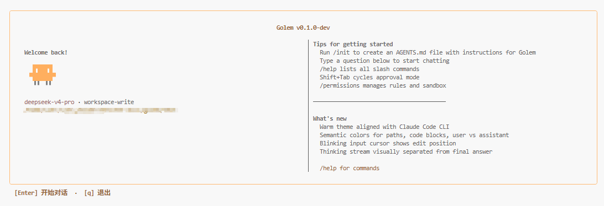
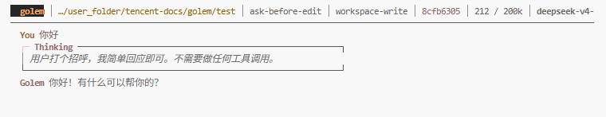
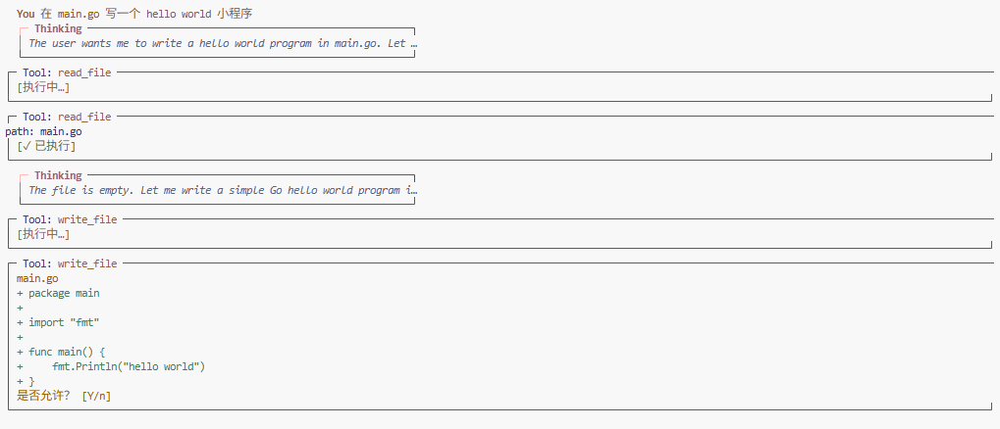

Go LLM Execution Model — 单二进制、零 CGO、毫秒级冷启动。 分层记忆管道、声明式权限引擎、四种审批模式，UX 对齐 Claude Code 与 Codex CLI。

从 Agent 主循环到三层记忆，golem 把 AI 编程助手需要的每一块都编译进一个静态二进制。
Streaming SSE 流式响应，自动识别 tool_use 并循环执行。内置 bash、read/write/edit、list_dir、grep 等工具。
Layer 0 滑动窗口压缩、Layer 1 BM25 情节记忆、Layer 2 自动合并 user_profile.md。按需注入，降低 Token 消耗。
审批模式（UX）+ YAML 规则（bash 策略）+ project_root 路径隔离 + Linux Namespace 沙箱，各司其职。
/permissions、/sessions、/compact、/context 等命令对齐 Claude Code / Codex CLI，Shift+Tab 切换审批模式。
统一 Anthropic Messages API 协议，base_url 可配 Claude、DeepSeek 等兼容端点，不绑定单一厂商。
纯 Go SQLite（modernc.org/sqlite）、Bubble Tea TUI、GitHub Actions CI。适合嵌入 CI/CD 与本地开发工作流。
深入研究 Claude Code 与 Codex CLI 的架构差异，在 Go 生态中实现差异化增强。
| 能力 | Claude Code / Codex | golem |
|---|---|---|
| 记忆检索 | 全量注入或固定上限 | BM25 按需检索 top-K |
| 记忆分层 | 单层或两阶段管道 | 三层架构 Working / Episodic / Semantic |
| 用户画像 | 有限或无 | 每项目 user_profile.md，每 3 次会话自动更新 |
| 上下文压缩 | 手动或自动触发 | 80% 阈值自动压缩 + /compact + /context 可视化 |
| 审批交互 | plan / ask / auto 等模式 | 四种模式 + Shift+Tab + /permissions 权限页 |
| 权限规则 | YAML 声明式规则 | 同样 YAML，deny > ask > allow，/permissions 管理 |
| 进程隔离 | 应用层 + sandbox 模式 | project_root 路径隔离 + bash namespace（P1） |
| 部署形态 | Node / Rust 运行时依赖 | 单静态二进制，冷启动 < 20ms，零 CGO |
| 模型接入 | 厂商绑定或有限切换 | Anthropic 风格接口，base_url 自由配置 |
跨会话提取偏好与项目事实，BM25 检索按需注入。相比全量记忆注入，显著降低 Token 消耗，同时保持上下文相关性。
审批模式、YAML 规则、project_root 路径限制、bash namespace 四层分离——不是把所有安全逻辑堆在一层里。
暖色主题对齐 Claude Code CLI，Thinking 流与最终回答视觉分离，语义着色区分路径、代码块与用户/助手消息。
纯 Go SQLite 驱动、Bubble Tea 组件化 TUI、colocated 单元测试 + integration 端到端测试。适合 Go 团队直接 fork 定制。
Go 1.22+，Linux 上可用 Namespace 沙箱。克隆仓库、配置 API Key、在项目目录启动即可。
编译为单个静态二进制，可选安装到 PATH。
项目级 .golem/config.yaml 覆盖全局 ~/.golem/config.yaml，支持环境变量占位符。
你在哪个目录执行 golem，哪里就是 project_root。TUI 内 Shift+Tab 切换审批模式。
# 安装 git clone https://github.com/liu-ethan/golem.git cd golem go build -o golem ./cmd/golem # 配置 .golem/config.yaml provider: base_url: "https://api.anthropic.com" api_key: "${ANTHROPIC_API_KEY}" model: "claude-sonnet-4-5" defaults: approval: ask-before-edit sandbox: workspace-write # 启动 cd my-project ./golem
Bubble Tea 驱动的 TUI，流式渲染、工具调用卡片、审批确认——一切在终端内完成。


Shift+Tab循环切换 approval 模式/permissions权限页：切换模式 + 查看 rules/sessions会话列表，点选 resume/compact手动触发 Layer 0 压缩/context可视化 context 占用/diff显示 working tree git diffplan只读探索，write/bash 直接拒绝ask-before-edit写操作前确认（默认推荐）ask任意 tool 执行前均弹确认edit-automatically全部自动执行从用户输入到记忆提取的完整执行管道，安全层与审批层严格分离。
golem/ ├── cmd/golem/ # CLI 入口 ├── internal/ │ ├── llm/ # LLMClient + prompts/ │ ├── agent/ # Agent 主循环 │ ├── tools/ # 内置工具集 │ ├── approval/ # 审批交互模式 │ ├── rules/ # YAML 权限规则 │ ├── sandbox/ # Linux Namespace │ ├── session/ # SQLite 会话 │ ├── memory/ # 三层记忆 + BM25 │ └── tui/ # Bubble Tea 界面 └── .golem/ # 项目级配置 ├── config.yaml ├── rules.yaml ├── user_profile.md └── data/golem.db
Layer 0 · Working Memory 当前会话 message history context 达 80% 自动压缩 Layer 1 · Episodic Memory 会话结束提取 3–5 条事实 BM25 检索 top-K 注入 Layer 2 · Semantic Memory 每 3 次会话合并 → .golem/user_profile.md 始终注入 system prompt